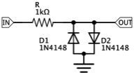
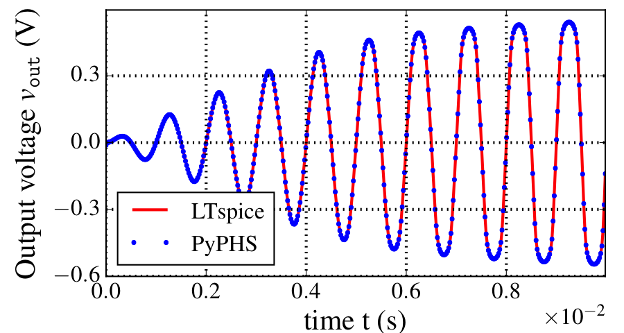
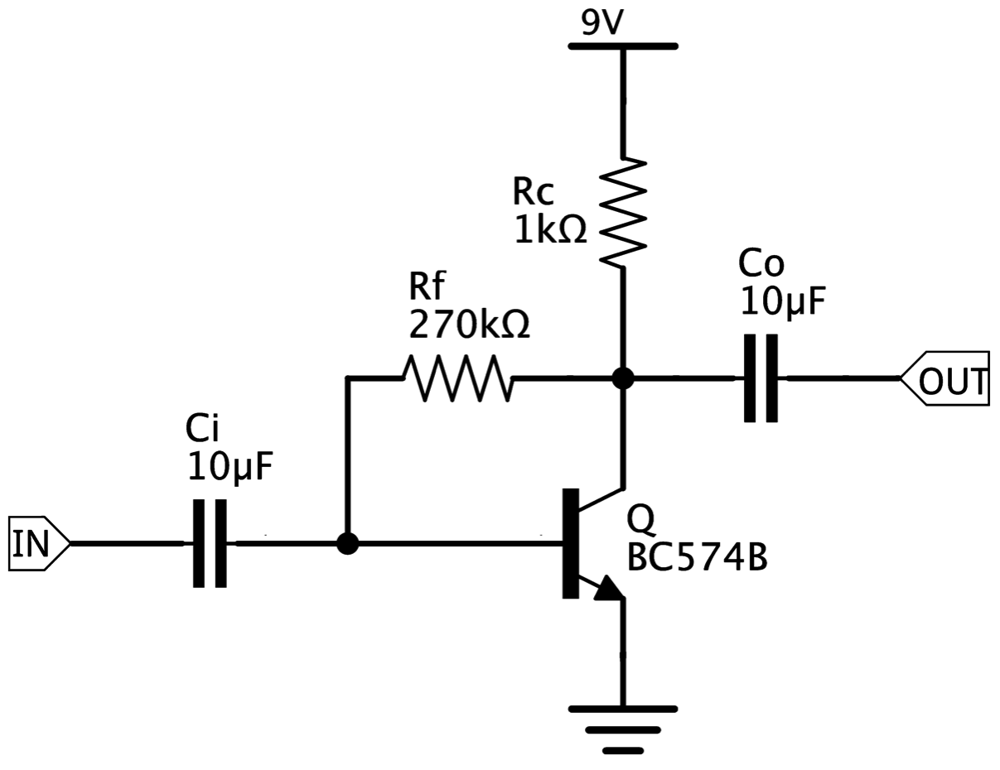
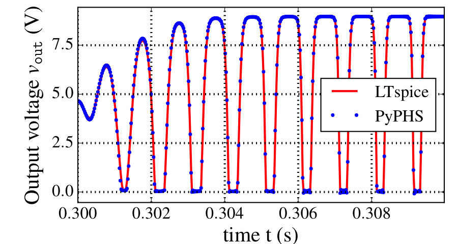
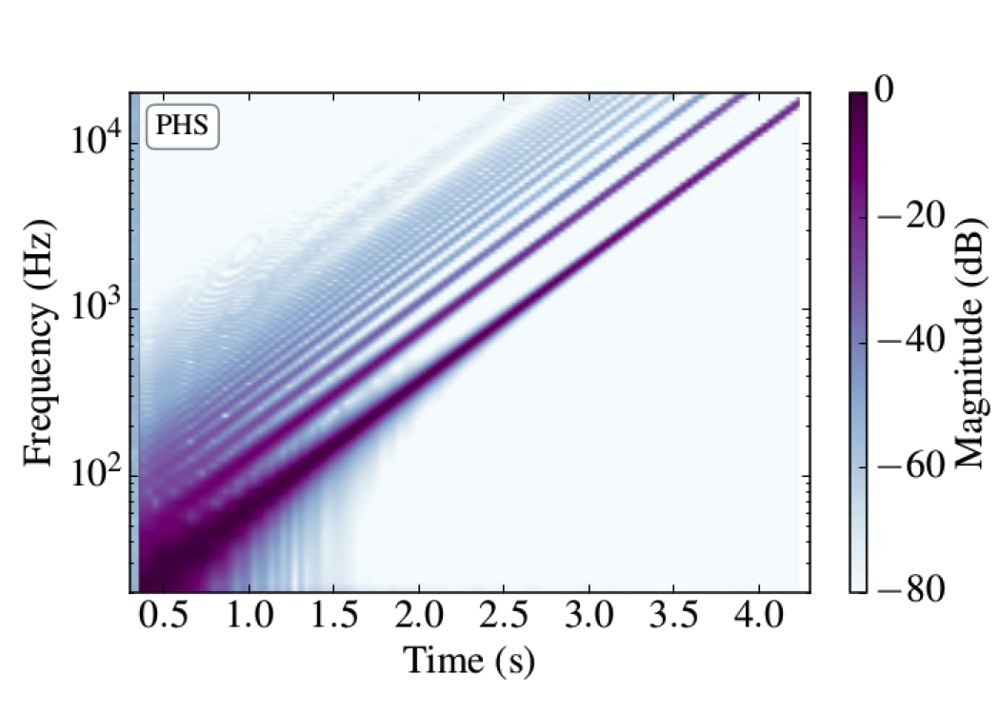
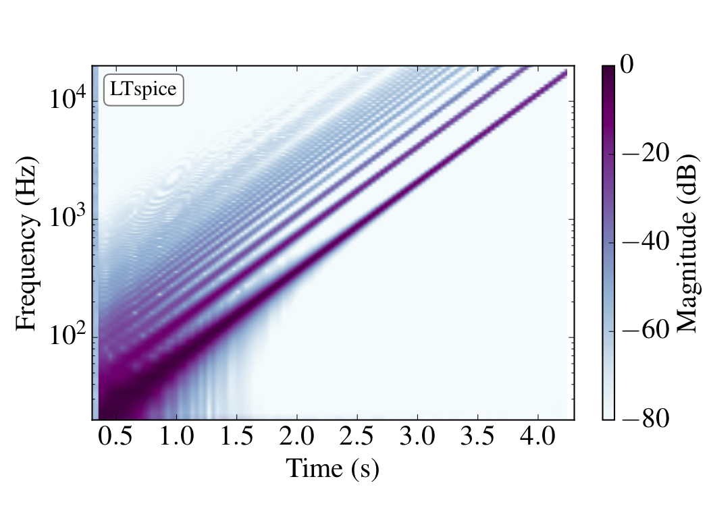

Analog audio circuits
This is a companion page for the article Passive guaranteed simulation of analog audio circuits: A port-Hamiltonian approach submitted in may 2016 to the special issue Audio Signal Processing of journal Applied Science.
Comparison of numerical methods
A detailed comparison with simulation code are available here.
Diode clipper
|

|

|
BJT audio amplifer
|

|

|
|

|

|
CryBaby wah pedal
Original
Short guitar sample
CryBaby output
The wah parameter (potentiometer coefficient) is continuously varying according to a sinusoid signal with DC offset 0.5, amplitude 1 and frequency 1Hz.